📋 Table des Matières
- Présentation de l'application
- Accès et connexion
- Page de connexion
- Rôles et droits d'accès
- Tableau de bord (Dashboard)
- Module Établissements
- Consulter les établissements
- Ajouter un établissement
- Gérer les niveaux et classes
- Module Élèves
- Liste des élèves
- Inscrire un élève
- Modifier / Désactiver un élève
- Module Paiements
- Module Scan Réfectoire
- Module Historique des Passages
- Module Utilisateurs (Admin)
- Configuration
- Personnalisation de l'interface (Thèmes)
- Fenêtre À Propos
1. Présentation de l'application
Cantine Connect est le système de gestion digitale de la restauration scolaire développé par KLEM Technologies & Services. Il permet à chaque gestionnaire d'établissement de piloter en temps réel l'inscription des élèves, les paiements Mobile Money, le contrôle d'accès au réfectoire et l'historique des passages — le tout depuis une interface web accessible sur ordinateur et tablette.
| Fonctionnalité | Description rapide |
|---|---|
| 🏫 Établissements | Création et gestion des établissements, niveaux et classes |
| 👨🎓 Élèves | Inscription, suivi et gestion du statut d'accès à la cantine |
| 💳 Paiements | Suivi des transactions Mobile Money (Orange, MTN, Wave, Moov) |
| 📷 Scan Réfectoire | Validation QR Code en moins d'une seconde |
| 📋 Historique | Consultation filtrée des passages avec export CSV |
| 📊 Dashboard | Statistiques globales et tendances sur 7 jours |
| 👥 Utilisateurs | Gestion des comptes (ADMIN uniquement) |
| ⚙️ Configuration | Paramètres tarifaires et périodes de grâce |
2. Accès et Connexion
2.1 Page de connexion
Ouvrez votre navigateur et accédez à l'URL de l'application fournie par votre administrateur.
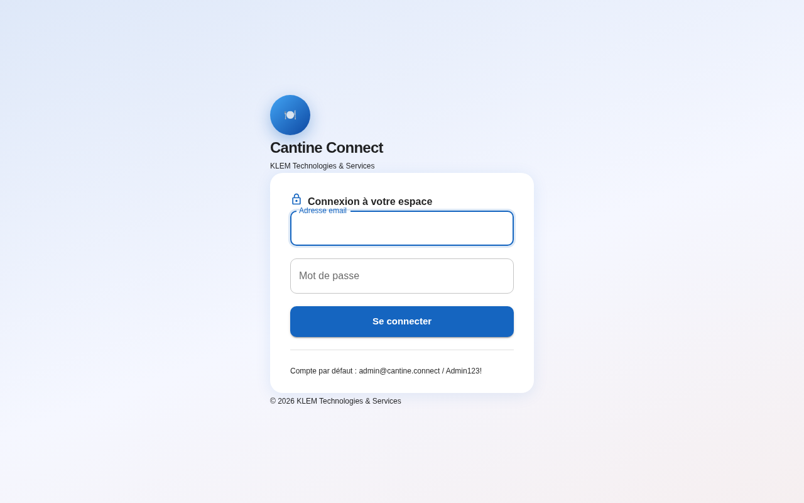
- Saisissez votre adresse email dans le premier champ.
- Saisissez votre mot de passe. Cliquez sur l'icône 👁️ pour l'afficher temporairement.
- Cliquez sur le bouton « Se connecter ».
- En cas de succès, vous êtes automatiquement redirigé vers le Tableau de bord.
2.2 Rôles et droits d'accès
| Rôle | Accès autorisés |
|---|---|
| ADMIN | Accès complet : tous les modules + Utilisateurs + Configuration |
| GESTIONNAIRE | Dashboard, Établissements, Élèves, Paiements, Scan, Historique |
| CAISSIER | Paiements et Scan Réfectoire uniquement |
3. Tableau de Bord (Dashboard)
Le tableau de bord est la page d'accueil de l'application. Il donne une vue synthétique et en temps réel de l'activité de la cantine.
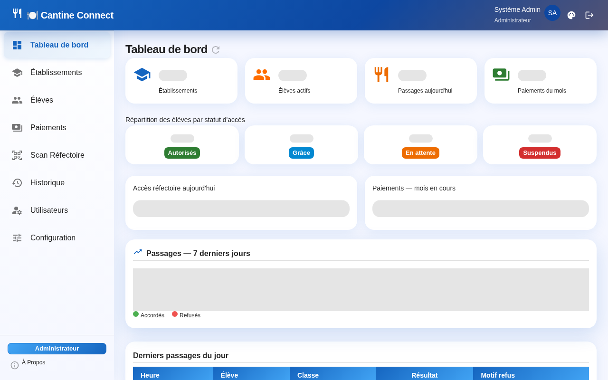
3.1 Cartes KPI (indicateurs clés)
| Indicateur | Description |
|---|---|
| 🏫 Établissements | Nombre d'établissements actifs dans le système |
| 👨🎓 Élèves actifs | Total des élèves inscrits et actifs + nb autorisés |
| 🍽️ Passages aujourd'hui | Total des validations du jour (✓ accordés / ✗ refusés) |
| 💰 Paiements du mois | Montant total FCFA encaissé + nombre de transactions |
3.2 Répartition des statuts
Quatre compteurs colorés affichent la répartition des élèves par statut d'accès :
- Autorisés — élèves à jour de paiement
- Grâce — élèves en période de grâce (délai accordé)
- En attente — paiement non reçu, accès sous conditions
- Suspendus — accès réfectoire bloqué
3.3 Graphique — Tendance 7 jours
Le graphique en barres empilées montre l'évolution des passages sur les 7 derniers jours. La partie verte représente les passages accordés, la partie rouge les refus. Survolez une barre pour voir le détail du jour.
3.4 Actualiser les données
Cliquez sur le bouton ↻ (en haut à droite du titre) pour recharger toutes les statistiques en temps réel.
4. Module Établissements
4.1 Consulter la liste
Cliquez sur 🏫 Établissements dans le menu de gauche. La liste affiche tous les établissements actifs avec leur nom, adresse, nombre de classes et statut.
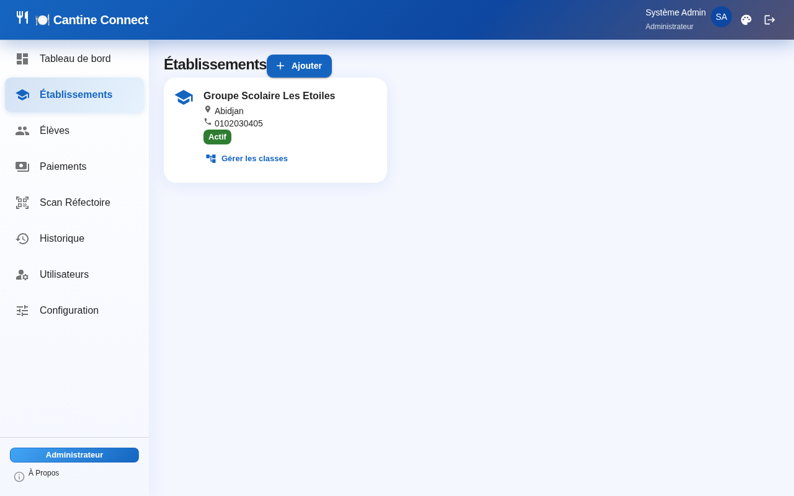
4.2 Ajouter un établissement
- Cliquez sur le bouton + Ajouter un établissement.
- Remplissez le formulaire : Nom, Adresse, Ville, Téléphone, Email de contact.
- Cliquez sur Enregistrer.
4.3 Gérer les niveaux et classes
Cliquez sur l'icône ⚙️ sur la ligne d'un établissement pour ouvrir le panneau de gestion de sa structure :
- Ajouter / renommer / supprimer des niveaux (ex : Primaire, Collège, Lycée)
- Ajouter / renommer / supprimer des classes pour chaque niveau (ex : 6ème A, CP1)
5. Module Élèves
5.1 Liste des élèves
Cliquez sur 👨🎓 Élèves dans le menu. La liste paginée affiche tous les élèves actifs. Utilisez les filtres pour affiner la recherche :
- Établissement — filtrer par établissement
- Classe — filtrer par classe
- Statut — AUTORISÉ / EN ATTENTE / SUSPENDU / GRÂCE
- Recherche — nom, prénom ou matricule
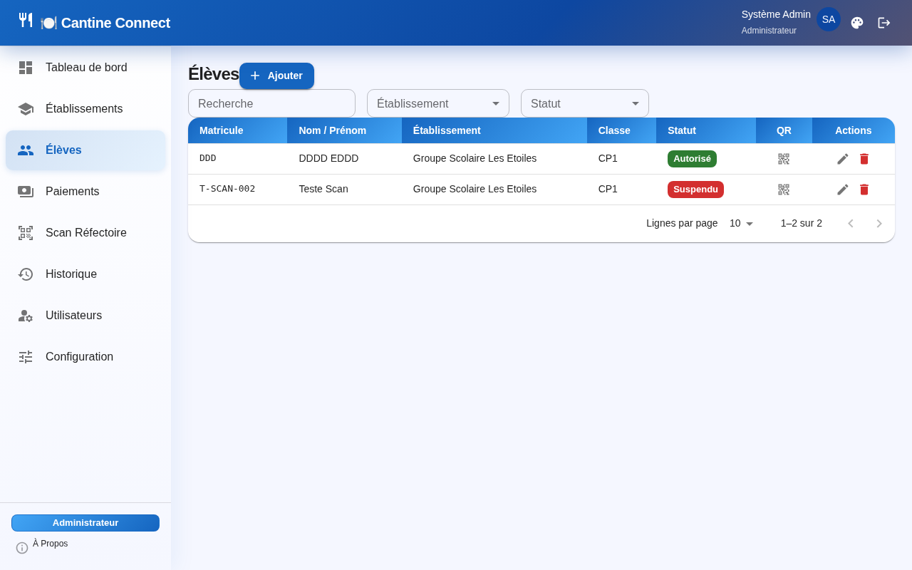
5.2 Inscrire un nouvel élève
Cliquez sur + Inscrire un élève. Le formulaire d'inscription est divisé en 3 onglets pour éviter le défilement :
| Onglet | Champs |
|---|---|
| 1 — Général | Nom, Prénom, Date de naissance, Matricule (auto-généré), Sexe, Photo (optionnelle) |
| 2 — Cantine / Affectation | Établissement, Niveau, Classe, Statut d'accès initial, Tarif mensuel |
| 3 — Contacts / Allergies | Nom et téléphone du parent/tuteur, email, allergies alimentaires, régime spécial |
- Remplissez les champs de l'onglet Général, puis cliquez sur suivant ou l'onglet suivant.
- Remplissez l'onglet Cantine / Affectation — choisissez l'établissement, le niveau et la classe.
- Remplissez l'onglet Contacts / Allergies avec les coordonnées du parent.
- Cliquez sur Enregistrer. Un QR Code unique est automatiquement généré.
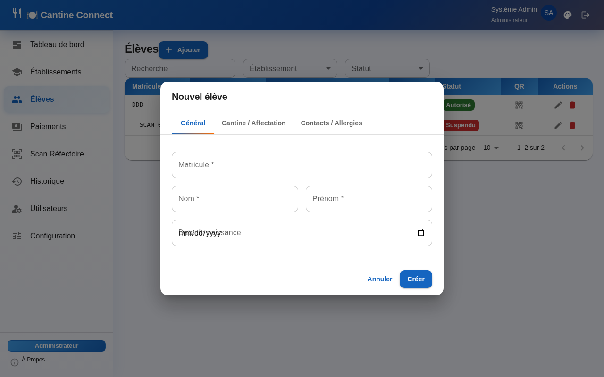
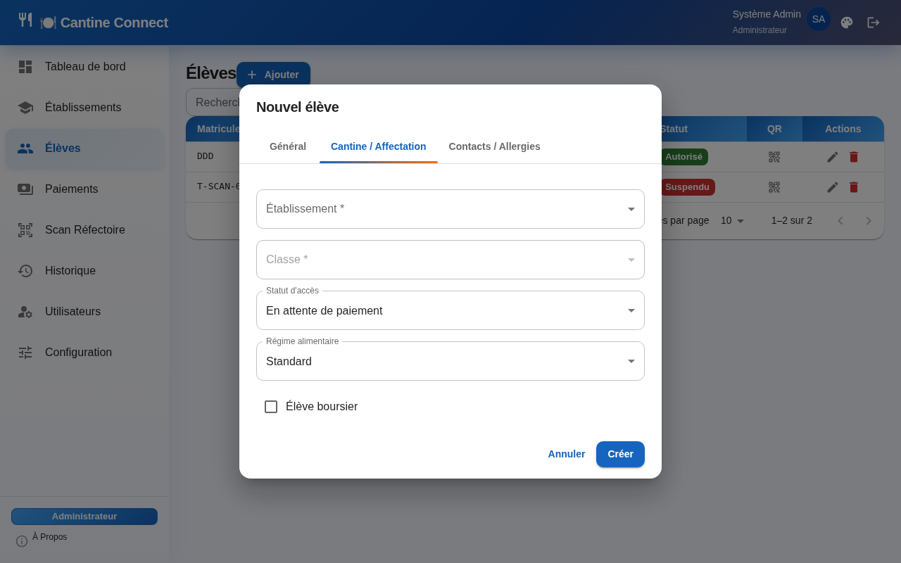
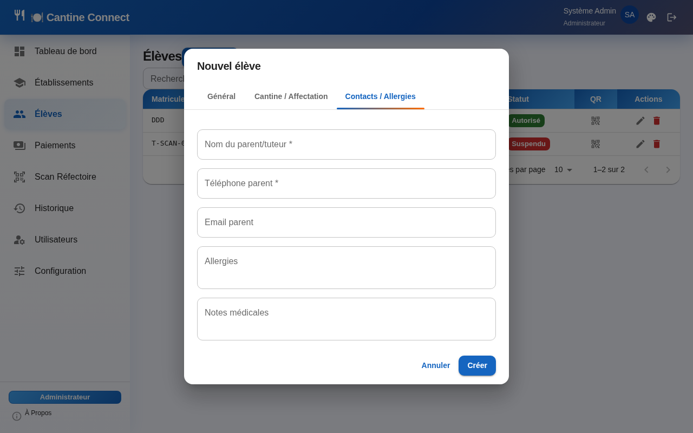
5.3 Modifier un élève
Cliquez sur l'icône ✏️ sur la ligne de l'élève. Le même formulaire à 3 onglets s'ouvre pré-rempli. Modifiez les champs souhaités et cliquez sur Enregistrer.
5.4 Changer le statut d'accès
Le statut d'accès d'un élève est mis à jour automatiquement après la confirmation d'un paiement. Il peut aussi être modifié manuellement depuis la fiche élève (onglet Cantine) :
- AUTORISÉ — accès réfectoire pleinement accordé
- GRÂCE — accès temporaire accordé malgré impayé (délai paramétrable)
- EN ATTENTE — paiement non reçu, alerte envoyée au parent
- SUSPENDU — accès bloqué au réfectoire
6. Module Paiements
Ce module permet de consulter toutes les transactions de paiement Mobile Money reçues pour les élèves inscrits.
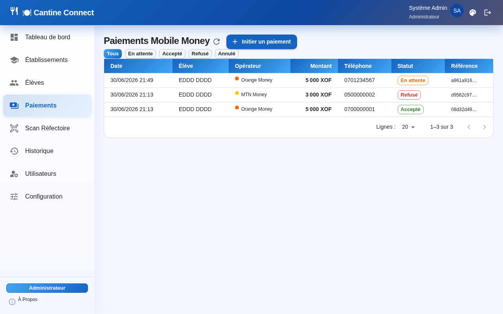
6.1 Statuts des transactions
| Statut | Signification |
|---|---|
| EN ATTENTE | Paiement initié, confirmation opérateur non reçue |
| ACCEPTÉ | Paiement confirmé — statut élève mis à jour automatiquement |
| REFUSÉ | Transaction rejetée par l'opérateur Mobile Money |
| ANNULÉ | Transaction annulée manuellement par un gestionnaire |
7. Module Scan Réfectoire
Ce module permet de valider l'accès au réfectoire en scannant le QR Code du badge élève. La validation s'effectue en moins d'une seconde.
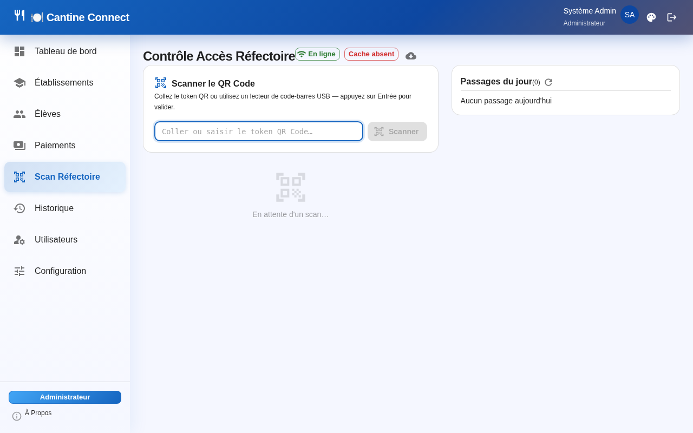
7.1 Effectuer un scan
- Cliquez sur 📷 Scan Réfectoire dans le menu.
- Autorisez l'accès à la caméra si demandé par le navigateur.
- Présentez le badge QR Code de l'élève devant la caméra.
- Le résultat s'affiche immédiatement :
✅ ACCORDÉ — l'élève peut entrer
❌ REFUSÉ — motif affiché (statut suspendu, déjà passé, etc.)
7.2 Motifs de refus possibles
| Motif | Action recommandée |
|---|---|
| STATUT_SUSPENDU | Rediriger vers le gestionnaire pour régularisation paiement |
| DEJA_PASSE | L'élève a déjà utilisé son accès pour ce service (anti-passback) |
| QR_CODE_INCONNU | Badge endommagé ou non enregistré — contacter l'administration |
| ELEVE_INACTIF | Élève désactivé du système — contacter l'administration |
7.3 Mode hors-ligne
8. Module Historique des Passages
Ce module permet de consulter l'historique complet de tous les passages enregistrés au réfectoire, avec des filtres avancés.
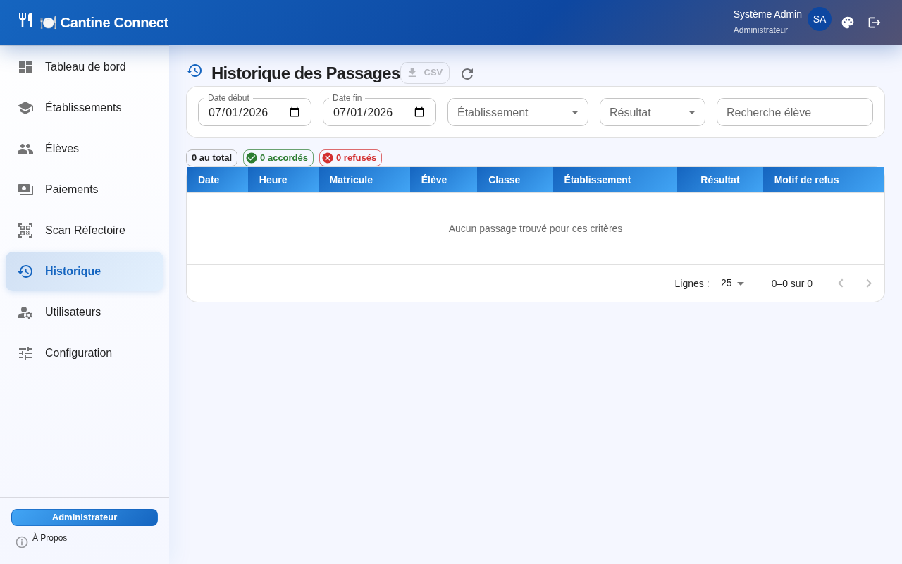
8.1 Filtrer les passages
- Période — sélectionnez une date de début et une date de fin
- Établissement — filtrer sur un établissement spécifique
- Résultat — Tous / Accordés seulement / Refusés seulement
- Recherche — tapez le nom, prénom ou matricule de l'élève
8.2 Exporter en CSV
- Appliquez les filtres souhaités.
- Cliquez sur le bouton 📥 Exporter CSV.
- Le fichier se télécharge automatiquement. Ouvrez-le dans Excel ou Google Sheets.
9. Module Utilisateurs (Administrateur)
Ce module permet à l'administrateur de gérer les comptes d'accès à l'application.
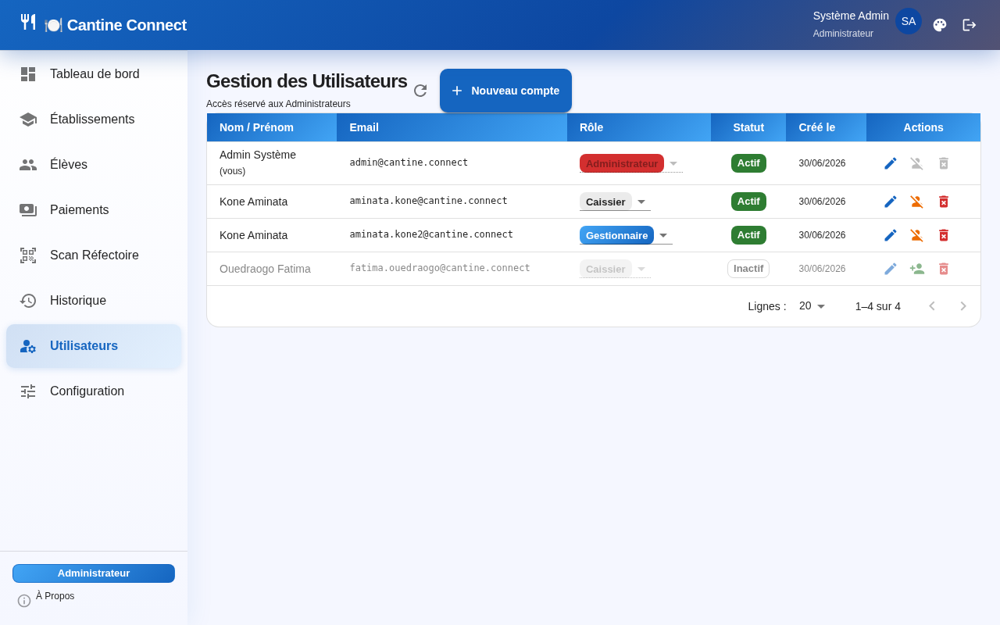
9.1 Créer un utilisateur
- Cliquez sur + Ajouter un utilisateur.
- Remplissez : Prénom, Nom, Email, Mot de passe (min. 8 caractères), Rôle.
- Cliquez sur Créer.
9.2 Modifier un utilisateur
Cliquez sur l'icône ✏️. Vous pouvez modifier le nom, prénom, email et optionnellement définir un nouveau mot de passe (laissez vide pour le conserver).
9.3 Désactiver / Réactiver
Cliquez sur le bouton de bascule pour désactiver temporairement un compte (l'utilisateur ne peut plus se connecter) ou le réactiver.
9.4 Supprimer définitivement
Cliquez sur l'icône 🗑️ rouge. Une fenêtre de confirmation s'affiche. Cliquez sur Supprimer définitivement pour confirmer.
10. Configuration
Ce module permet de configurer les paramètres globaux de la cantine : tarifs, périodes de grâce, et autres paramètres opérationnels. Toute modification est prise en compte immédiatement.
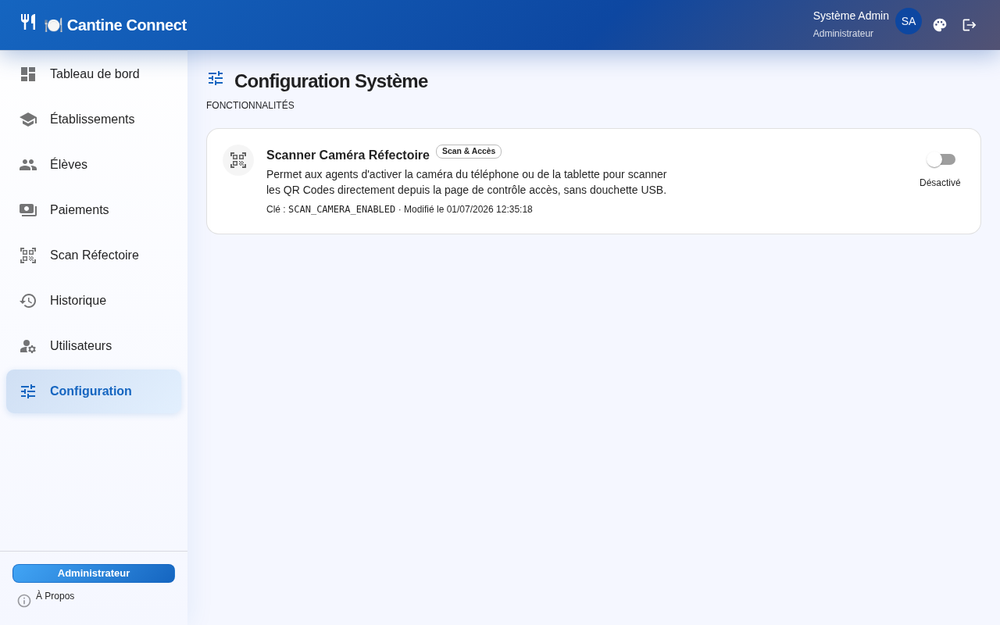
11. Personnalisation de l'Interface (Thèmes)
Cantine Connect propose 3 thèmes visuels que vous pouvez changer à tout moment. Votre choix est mémorisé automatiquement dans votre navigateur.
Comment changer de thème
- Cliquez sur l'icône 🎨 (palette) dans la barre de navigation en haut à droite.
- Un panneau s'ouvre avec les 3 thèmes disponibles.
- Cliquez sur le thème souhaité — le changement est immédiat.
| Thème | Description | Idéal pour |
|---|---|---|
| 🏢 Corporatif | Dark mode — fond marine profond, texte clair, interface sobre | Travail en bureau, lumière tamisée |
| ✨ Moderne | Fond blanc, gradients colorés, effets premium (défaut) | Présentations, usage quotidien lumineux |
| 🇨🇮 École Ivoirienne | Orange primaire, vert secondaire, fond ivoire | Affichage public, écrans d'entrée |
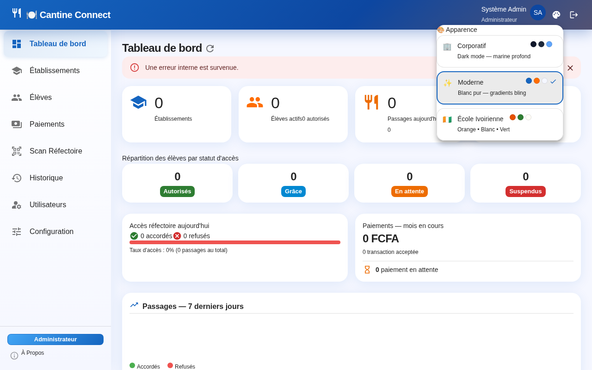
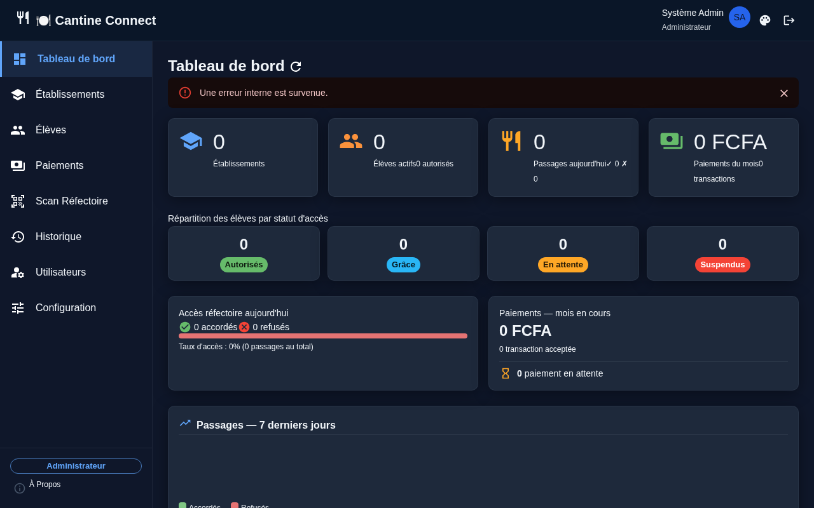
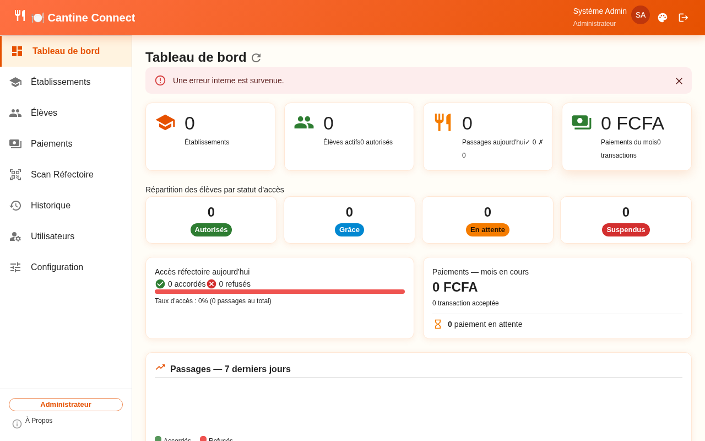
12. Fenêtre À Propos
Pour consulter les informations de version et les contacts KLEM Technologies & Services :
- En bas du menu de navigation gauche, cliquez sur l'icône ℹ️ À Propos.
- Une fenêtre s'ouvre avec la version de l'application, les coordonnées et le copyright.
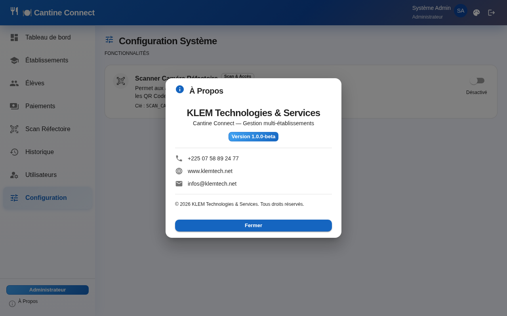